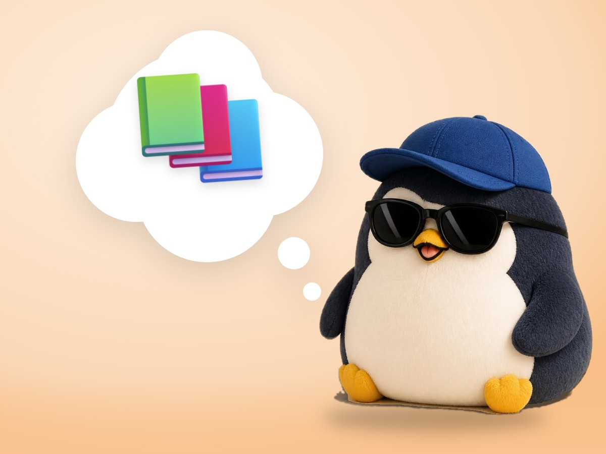

🧪 LAB · 試作 — AIが読書メモから一気に作った記事です。本番の一覧には出していません · 試作の一覧
🐧 EVERYDAY LIFE⚡ 41 SEC
Different books often reach the same answer: stand on your own feet 📚

Sound Familiar
You may read many kinds of books, like books about people, habits, or the mind.
What they say can look very different from book to book.
Same Answer
But if you read carefully, different books sometimes reach the same place.
That place is "independence," or standing on your own feet.
⚡ TRY IT
3 roads, 1 mountain top
Tap a book. Its penguin climbs its own road.
❓ Where do they go?🚩 Standing on your own feet!
🐧📘
🐧📗
🐧📙
🎉 3 different roads. 1 same answer.
What It Means
Independence means caring more about what you do than about what people think of you.
The Reason
This is because you cannot change other people's feelings or events, but you can choose how you act.
For Example
For example, even if a friend is slow to reply, you do not panic, and you enjoy your own time.
One Mountain
It is like taking different roads but reaching the same mountain top.
When you read many books, the important answers slowly become clear.
📚 I wrote this from my reading notes.